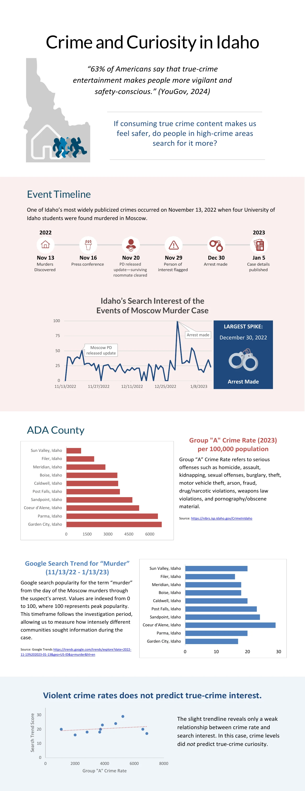

01
Reporting the finding I didn't expect
I expected higher crime to mean more searching, but the scatter plot didn't support it. Rather than force the story, I let the evidence lead and built the infographic around what the data actually showed.
Data Storytelling
A data story that tests a popular claim about true crime by comparing crime rates and search behavior across ten Idaho cities during the Moscow murder investigation.
Data Storytelling • Data Analysis • Data Visualization • Research Design

Inside the Infographic
A 2024 YouGov survey found that 63% of Americans say true-crime entertainment makes people more vigilant and safety-conscious. If consuming true crime makes us feel safer, do people in high-crime areas search for it more?
On November 13, 2022, four University of Idaho students were found murdered in Moscow. Police held a press conference on November 16, released an update clearing the surviving roommates on November 20, flagged a person of interest on November 29, made an arrest on December 30, and published case details on January 5, 2023. Idaho's search interest in the case peaked on December 30, the day of the arrest, with a smaller rise after the November 20 police update.
Group "A" crime rates for 2023, per 100,000 people, cover serious offenses such as homicide, assault, burglary, theft, fraud, and drug violations. Among the ten cities, Garden City and Parma had the highest rates and Sun Valley had the lowest. Source: Idaho State Police, Crime in Idaho.
Google Trends scores for "murder" from November 13, 2022 to January 13, 2023, indexed from 0 to 100, where 100 is peak popularity. Coeur d'Alene showed the highest interest, followed by Sandpoint and Post Falls. Filer and Garden City were among the lowest. Source: Google Trends.
Plotting each city's crime rate against its search score produces only a slight upward trendline. In this case, crime levels did not predict true-crime curiosity.
Problem
A 2024 YouGov survey found that most Americans believe true-crime entertainment makes people more vigilant. If that is true, do people in higher-crime areas search for it more?
Approach
Using the 2022 Moscow murders as a case, I compared Idaho State Police crime rates with Google search interest for "murder" across ten Idaho cities and told the story in a scrolling infographic.
Result
The data showed only a weak relationship, so the infographic reports that finding rather than the one I expected.
10
Idaho cities
2
Public datasets
63%
Survey claim tested
Tools Used
Strategy Rationale
01
I expected higher crime to mean more searching, but the scatter plot didn't support it. Rather than force the story, I let the evidence lead and built the infographic around what the data actually showed.
02
Google Trends shows relative popularity on a 0 to 100 scale, not search counts. I explained that to readers in plain language and treated search interest as a signal of curiosity, not a count of people.
03
Because the story centers on real victims, I kept the focus on public events, left out names and images, and cited every data source directly under its chart.
Keep Exploring
Browse job aids, data stories, and communication strategy projects, or get in touch to talk about your next adoption challenge.